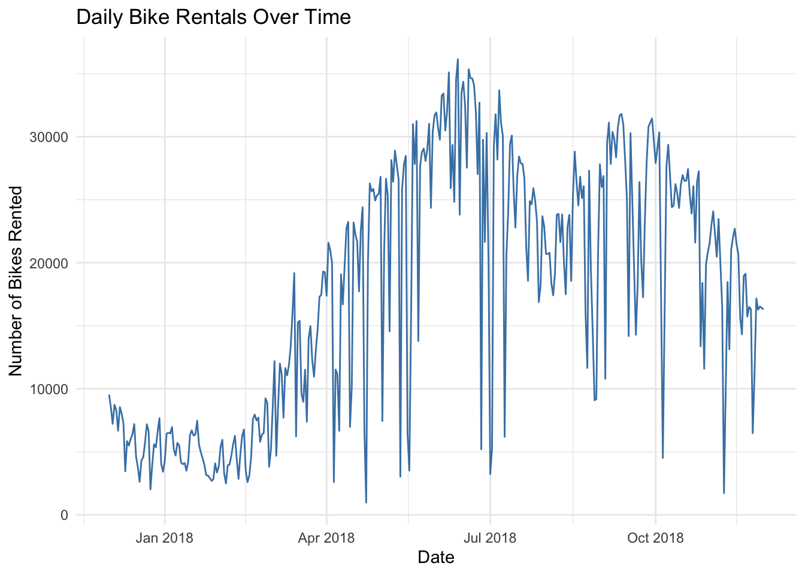
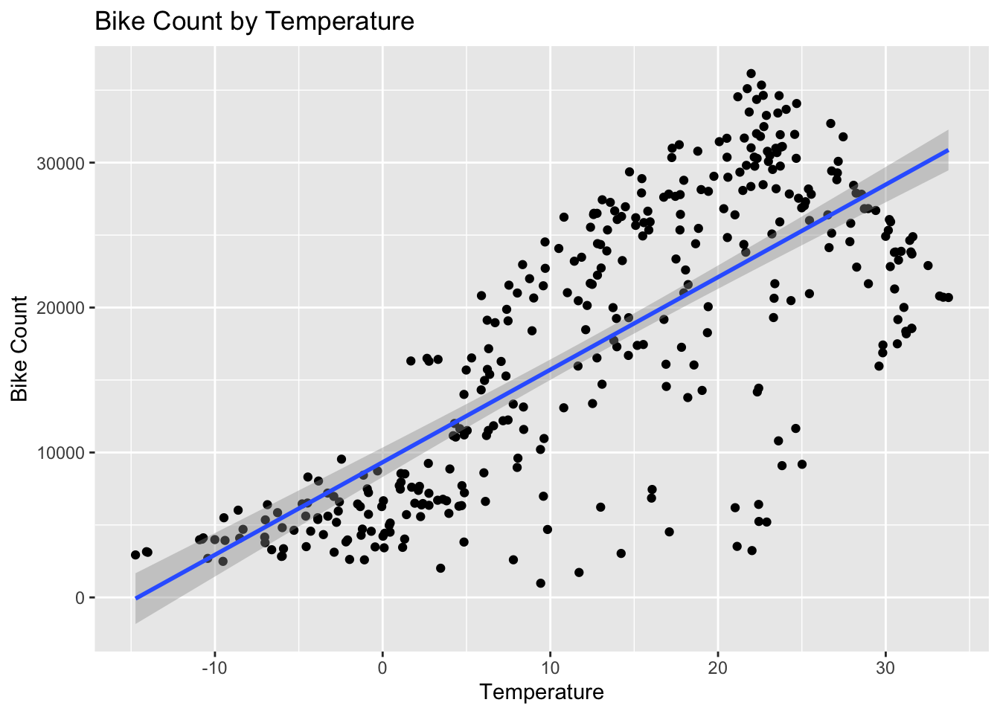
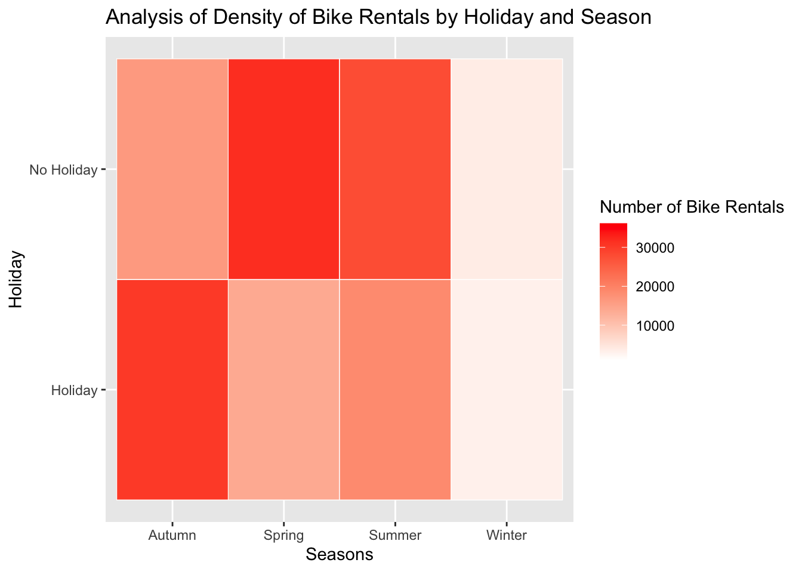

Rows: 8760 Columns: 14
── Column specification ────────────────────────────────────────────────────────
Delimiter: ","
chr (4): Date, Seasons, Holiday, Functioning Day
dbl (10): Rented Bike Count, Hour, Temperature(°C), Humidity(%), Wind speed ...
ℹ Use `spec()` to retrieve the full column specification for this data.
ℹ Specify the column types or set `show_col_types = FALSE` to quiet this message.
PART ONE: EDA
CHECKING THE DATA
Checking for missingness
colSums(is.na(bike_data))
Date Rented Bike Count Hour
0 0 0
Temperature(°C) Humidity(%) Wind speed (m/s)
0 0 0
Visibility (10m) Dew point temperature(°C) Solar Radiation (MJ/m2)
0 0 0
Rainfall(mm) Snowfall (cm) Seasons
0 0 0
Holiday Functioning Day
0 0
#Checking numeric data summariesbike_data |>select(where(is.numeric)) |>summary()
Rented Bike Count Hour Temperature(°C) Humidity(%)
Min. : 0.0 Min. : 0.00 Min. :-17.80 Min. : 0.00
1st Qu.: 191.0 1st Qu.: 5.75 1st Qu.: 3.50 1st Qu.:42.00
Median : 504.5 Median :11.50 Median : 13.70 Median :57.00
Mean : 704.6 Mean :11.50 Mean : 12.88 Mean :58.23
3rd Qu.:1065.2 3rd Qu.:17.25 3rd Qu.: 22.50 3rd Qu.:74.00
Max. :3556.0 Max. :23.00 Max. : 39.40 Max. :98.00
Wind speed (m/s) Visibility (10m) Dew point temperature(°C)
Min. :0.000 Min. : 27 Min. :-30.600
1st Qu.:0.900 1st Qu.: 940 1st Qu.: -4.700
Median :1.500 Median :1698 Median : 5.100
Mean :1.725 Mean :1437 Mean : 4.074
3rd Qu.:2.300 3rd Qu.:2000 3rd Qu.: 14.800
Max. :7.400 Max. :2000 Max. : 27.200
Solar Radiation (MJ/m2) Rainfall(mm) Snowfall (cm)
Min. :0.0000 Min. : 0.0000 Min. :0.00000
1st Qu.:0.0000 1st Qu.: 0.0000 1st Qu.:0.00000
Median :0.0100 Median : 0.0000 Median :0.00000
Mean :0.5691 Mean : 0.1487 Mean :0.07507
3rd Qu.:0.9300 3rd Qu.: 0.0000 3rd Qu.:0.00000
Max. :3.5200 Max. :35.0000 Max. :8.80000
#The Date variable is stored as a character, so we will use dmy() to convert it into the correct formatbike_data <- bike_data |>mutate(Date =dmy(Date))
#We also found these statistics when grouped by the categorical variablesbike_data |>group_by(seasons) |>summarize(mean_bikes =mean(rented_bike_count),med_bikes =median(rented_bike_count),sd_bikes =sd(rented_bike_count),min_bikes =min(rented_bike_count),max_bikes =max(rented_bike_count) )
#Getting all of the means and sums for the numeric variablesbike_daily <- bike_data |>group_by(date, seasons, holiday) |>summarize(sum_rented_count =sum(rented_bike_count),sum_rainfall =sum(rainfall),sum_snowfall =sum(snowfall),mean_temp =mean(temp),mean_humidity =mean(humidity),mean_wind_speed =mean(wind_speed),mean_visibility =mean(visibility),mean_dew_temp =mean(dew_point_temp),mean_solar_rad =mean(solar_rad),.groups ='drop' )bike_daily
# A tibble: 353 × 12
date seasons holiday sum_rented_count sum_rainfall sum_snowfall
<date> <fct> <fct> <dbl> <dbl> <dbl>
1 2017-12-01 Winter No Holiday 9539 0 0
2 2017-12-02 Winter No Holiday 8523 0 0
3 2017-12-03 Winter No Holiday 7222 4 0
4 2017-12-04 Winter No Holiday 8729 0.1 0
5 2017-12-05 Winter No Holiday 8307 0 0
6 2017-12-06 Winter No Holiday 6669 1.3 8.6
7 2017-12-07 Winter No Holiday 8549 0 10.4
8 2017-12-08 Winter No Holiday 8032 0 0
9 2017-12-09 Winter No Holiday 7233 0 0
10 2017-12-10 Winter No Holiday 3453 4.1 32.5
# ℹ 343 more rows
# ℹ 6 more variables: mean_temp <dbl>, mean_humidity <dbl>,
# mean_wind_speed <dbl>, mean_visibility <dbl>, mean_dew_temp <dbl>,
# mean_solar_rad <dbl>
Recreating basic summary stats and creating plots
summary(bike_daily)
date seasons holiday sum_rented_count
Min. :2017-12-01 Autumn:81 Holiday : 17 Min. : 977
1st Qu.:2018-02-27 Spring:90 No Holiday:336 1st Qu.: 6967
Median :2018-05-28 Summer:92 Median :18563
Mean :2018-05-28 Winter:90 Mean :17485
3rd Qu.:2018-08-24 3rd Qu.:26285
Max. :2018-11-30 Max. :36149
sum_rainfall sum_snowfall mean_temp mean_humidity
Min. : 0.000 Min. : 0.000 Min. :-14.738 Min. :22.25
1st Qu.: 0.000 1st Qu.: 0.000 1st Qu.: 3.304 1st Qu.:47.58
Median : 0.000 Median : 0.000 Median : 13.738 Median :57.17
Mean : 3.576 Mean : 1.863 Mean : 12.776 Mean :58.17
3rd Qu.: 0.500 3rd Qu.: 0.000 3rd Qu.: 22.592 3rd Qu.:67.71
Max. :95.500 Max. :78.700 Max. : 33.742 Max. :95.88
mean_wind_speed mean_visibility mean_dew_temp mean_solar_rad
Min. :0.6625 Min. : 214.3 Min. :-27.750 Min. :0.02917
1st Qu.:1.3042 1st Qu.:1087.0 1st Qu.: -5.188 1st Qu.:0.28333
Median :1.6583 Median :1557.8 Median : 4.612 Median :0.56500
Mean :1.7261 Mean :1434.0 Mean : 3.954 Mean :0.56773
3rd Qu.:1.9542 3rd Qu.:1874.3 3rd Qu.: 14.921 3rd Qu.:0.82000
Max. :4.0000 Max. :2000.0 Max. : 25.038 Max. :1.21667
PLOTS
This is a line graph that analyzes the number of bike rentals over the date variable
ggplot(bike_daily, aes(x = date, y = sum_rented_count)) +geom_line(color ='steelblue') +labs(title ='Daily Bike Rentals Over Time',x ='Date',y ='Number of Bikes Rented' ) +theme_minimal()

This is a scatterplot that analyzes the correlation between the number of bike rentals and temperature
ggplot(bike_daily, aes(x = mean_temp, y = sum_rented_count)) +geom_point() +geom_smooth(method ='lm') +labs(title ='Bike Count by Temperature',x ='Temperature',y ='Bike Count' )
`geom_smooth()` using formula = 'y ~ x'

This is a heatmap that analyzes the density of bike rentals depending on if it was a holiday and the season
ggplot(bike_daily, aes(x = seasons, y = holiday, fill = sum_rented_count)) +geom_tile(color ='white') +scale_fill_gradient(low ='white', high ='red') +labs(title ='Analysis of Density of Bike Rentals by Holiday and Season',x ='Seasons',y ='Holiday',fill ='Number of Bike Rentals' )

This is a boxplot that gives the five number summary for the bike rental count variable grouped by the season variable
ggplot(bike_daily, aes(x = seasons, y = sum_rented_count)) +geom_boxplot() +labs(title ='daily Bike Rentals by Season',x ='Season',y ='Total Daily Rentals' )
#Naming the split setstrain_set <-training(split_data)test_set <-testing(split_data)
PART THREE: FITTING MLR MODELS
Adding the weekend/weekday variable
#Creating the weekday variable for the training settrain_set <- train_set |>mutate(weekday =factor(if_else(wday(date) %in%c(1,7), 'weekend', 'weekday')))#Creating the weekday variable for the testing settest_set <- test_set |>mutate(weekday =factor(if_else(wday(date) %in%c(1,7), 'weekend', 'weekday')))
Standardizing data
#Creating a vector with all names of numeric variablesnum_vars <-c('mean_temp', 'mean_humidity', 'mean_wind_speed', 'mean_visibility', 'mean_dew_temp', 'mean_solar_rad', 'sum_rainfall', 'sum_snowfall')#Finding means of all numeric variablesstandard_means <- train_set |>summarize(across(all_of(num_vars), mean))#Finding sd for all numeric variablesstandard_sd <- train_set |>summarize(across(all_of(num_vars), sd))#Standardizing both testing and training setfor(v in num_vars){ train_set[[paste0(v, '_std')]] <- (train_set[[v]] - standard_means[[v]]) / standard_sd[[v]] test_set[[paste0(v, '_std')]] <- (test_set[[v]] - standard_means[[v]]) / standard_sd[[v]]}
Fitting first model
#This model includes all standardized numeric variables as well as seasons, holiday, and weekdaymodel1 <-lm( sum_rented_count ~ mean_temp_std + mean_humidity_std + mean_wind_speed_std + mean_visibility_std + mean_dew_temp_std + mean_solar_rad_std + sum_rainfall_std + sum_snowfall_std + seasons + holiday + weekday,data = train_set)
Fitting second model
#This model uses the same variables as model1 and includes interactions between seasons and holiday, seasons and mean temperature, and mean temperature and the rain summodel2 <-lm( sum_rented_count ~ mean_temp_std + mean_humidity_std + mean_wind_speed_std + mean_visibility_std + mean_dew_temp_std + mean_solar_rad_std + sum_rainfall_std + sum_snowfall_std + seasons + holiday + weekday + seasons:holiday + seasons:mean_temp_std + mean_temp_std:sum_rainfall_std,data = train_set)
Fitting third model
#This model takes everything from model2 and adds squared terms for temperature and humiditymodel3 <-lm( sum_rented_count ~ mean_temp_std + mean_humidity_std + mean_wind_speed_std + mean_visibility_std + mean_dew_temp_std + mean_solar_rad_std + sum_rainfall_std + sum_snowfall_std + seasons + holiday + weekday + seasons:holiday + seasons:mean_temp_std + mean_temp_std:sum_rainfall_std +I(mean_temp_std^2) +I(mean_humidity_std^2),data = train_set)
Finding the best RMSE
#Making an 'rmse' function that can be used on the modelsrmse <-function(actual, predicted){sqrt(mean((actual-predicted)^2))}#Using predict to make objects that can be used in the 'rmse' functionmodel1_pred <-predict(model1, newdata = test_set)model2_pred <-predict(model2, newdata = test_set)model3_pred <-predict(model3, newdata = test_set)#Using 'rmse' to find the best fit model and putting the results into a tibblermse_results <-tibble(model =c('Model 1', 'Model 2', 'Model 3'),test_rmse =c(rmse(test_set$sum_rented_count, model1_pred),rmse(test_set$sum_rented_count, model2_pred),rmse(test_set$sum_rented_count, model3_pred) ))rmse_results
# A tibble: 3 × 2
model test_rmse
<chr> <dbl>
1 Model 1 4205.
2 Model 2 3098.
3 Model 3 3059.
#The best model is model3, since it has the lowest RMSE! We will use it to refit the full dataset
Reproducing model and standardization
#Recreating the weekday variablefull_data <- bike_daily |>ungroup() |>mutate(weekday =factor(if_else(wday(date) %in%c(1,7), 'weekend', 'weekday')))#Finding the mean for the full datafull_mean <- full_data |>summarize(across(all_of(num_vars), mean))#Finding the sd for the full datafull_sd <- full_data |>summarise(across(all_of(num_vars), sd))#Standardizing the numeric variablesfor(v in num_vars){ full_data[[paste0(v, '_std')]] <- (full_data[[v]] - full_mean[[v]]) / full_sd[[v]]}
Creating the final model
full_model <-lm( sum_rented_count ~ mean_temp_std + mean_humidity_std + mean_wind_speed_std + mean_visibility_std + mean_dew_temp_std + mean_solar_rad_std + sum_rainfall_std + sum_snowfall_std + seasons + holiday + weekday + seasons:holiday + seasons:mean_temp_std + mean_temp_std:sum_rainfall_std +I(mean_temp_std^2) +I(mean_humidity_std^2),data = full_data)#Finding the coefficients and putting them into a data framecoef_data <-as.data.frame(coef(full_model)) |>arrange(desc(coef(full_model)))coef_data